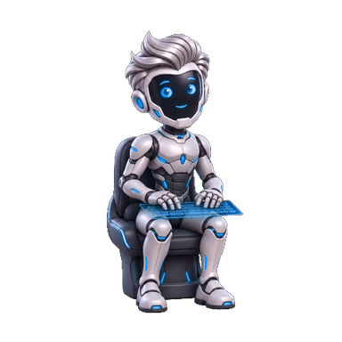
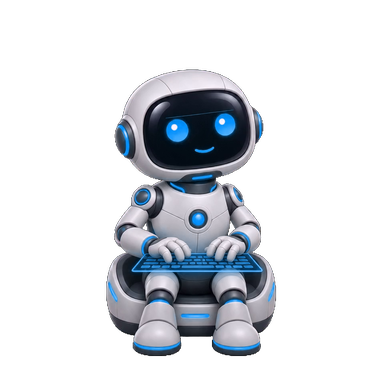
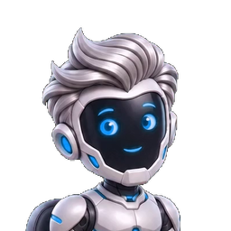
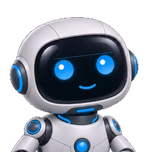

Orion
MASCULIN
Frappe, regard et geste coordonnés.
NOUVELLE MÉTHODE D’ANIMATION
Une génération vidéo par personnage, avec Seedance 2.0, le modèle utilisé pour Nora. Ces essais remplacent les animations de pièces articulées V1, écartées.
La direction actuelle se concentre sur les portraits, avec un nouveau visage de bot pour Orion. Voir les trois états des portraits V5.

Frappe, regard et geste coordonnés.

Clignement, curiosité et mouvement du corps.
Même mouvement et même identité, avec un cadrage plus proche.

Orion
Prisme